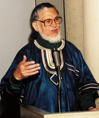
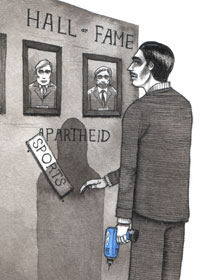

Hall of Shame - A South African activist has a lesson for U.S. sports.
Submitted on Mon, 01/14/2008 - 2:37pm

Written on Martin Luther King Day 2008 for my friends attending the 10th Annual Summit Against Racism
Greetings from Durban South Africa to all participants in the 10th Annual Summit Against Racism on January 26 at the East Liberty Presbyterian Church. I made my home in Pittsburgh for many years. I came to Pittsburgh after organizing interracial athletic leagues is Apartheid South Africa and then challenging the International Olympic Committee to ban Apartheid South Africa from the Olympic Games.
As I write this, today is Martin Luther King Day, a group of New Era workers in Mobile, Alabama who were fired for organizing a union are marching with United Students Against Sweatshops and the NAACP. These workers are sewing Pirates apparel. We demand that the Pirates intervene on their behalf. Major League Baseball knows about the sweatshop conditions at New Era factories in Alabama and in factories New Era subcontracts with in other parts of the world. They don’t care. We do, and the Pirates must represent the City of Pittsburgh by being vocal and outspoken at the table with the league. They have to demand the disclosure of factory locations and investigations that are fair for workers, not a cover-ups.
There has been tremendous struggle this month by garment workers in Bangladesh, workers doing exactly the same work as New Era workers in Alabama and Derby, New York. Their representatives, members of the Bangladesh Center for Workers Solidarity, came to Pittsburgh and spoke with us at Freedom Corner in 2004. The Pittsburgh Anti Sweatshop Community Alliance has been in contact with the National Garments Workers Federation of Bangladesh for many years. We are outraged to have learned that, earlier this month, a young woman died after being denied medical leave. Many thousands have demonstrated on her behalf and for their own workers’ rights. Many of these workers sew Pirates apparel. An investigation, according to protocols established by the Workers Rights Consortium and endorsed by universities like Duquese and Penn State, can stop violence being perpetrated against these workers by company thugs and government military forces in collusion with the Manufactures Association.
The struggle against racism is the same in Pittsburgh as in South Africa and the struggle of manufacturing workers in sweatshops is not so distant either. We can relate to their difficulty confronting plant closings and the need for oversight of payroll records to stop theft from contractors. It is not so different from the struggle of “temporary” workers at Camden Yards in Baltimore, Maryland. Many of you met them at the 2006 All Star anti sweatshop demonstration at Pittsburgh City Council and on Roberto Clemente Bridge. During the 2008 baseball season they will implement a hard fought agreement that includes Living Wages. Our friends with the United Workers Association at Camden Yards have demonstrated that we can stop being “temporary” when we become Human Rights Organizers ourselves.
I am with you in your struggles today, Martin Luther King Day, and at the Summit Against Racism, for equity, against police brutality, to have sports teams, corporations, and a government that honestly reflect the Pittsburgh that I know. One of the things that will mean is a Civil Rights Bridge between PNC Park and the floor of the global sweatshop. The Pirates use Pittsburgh as a platform to represent themselves but that representation is not sincere without accepting a responsibility, an obligation, to reflect our values. Those values are highlighted at the Summit Against Racism.
What the Pittsburgh Anti Sweatshop Community Alliance is asking for is Civil Rights Bridge, not unlike the one Roberto Clemente envisioned in 1972. Relief aid that Roberto Clemente had sent to earthquake-stricken Nicaragua was stolen by thugs of the dictator Somoza, he knew that his name and association with the City of Pittsburgh could shine a light into this injustice. Sending material aid was not enough: he had to deliver solidarity. Pittsburgher’s have a right to expect, as Roberto Clemente would, that our team lead Major League Baseball towards an end of sweatshop labor.
Work for justice at the Summit Against Racism. Extend my solidarity to my Brothers and Sisters of Black Voices of Peace. I will be participating directly in the celebration of International Women’s Day (3/8) and May Day 2008 with the Pittsburgh Anti Sweatshop Community Alliance and the National Garment Workers Federation of Bangladesh.
Nelson Mandela and I learned that the International Olympic Committee had finally banned South Africa’s participation as we broke rocks together at Robben Island. We were inspired by Martin Luther King then as you are now.
Solidarity,
Dennis Brutus
Greetings from Durban South Africa to all participants in the 10th Annual Summit Against Racism on January 26 at the East Liberty Presbyterian Church. I made my home in Pittsburgh for many years. I came to Pittsburgh after organizing interracial athletic leagues is Apartheid South Africa and then challenging the International Olympic Committee to ban Apartheid South Africa from the Olympic Games.
As I write this, today is Martin Luther King Day, a group of New Era workers in Mobile, Alabama who were fired for organizing a union are marching with United Students Against Sweatshops and the NAACP. These workers are sewing Pirates apparel. We demand that the Pirates intervene on their behalf. Major League Baseball knows about the sweatshop conditions at New Era factories in Alabama and in factories New Era subcontracts with in other parts of the world. They don’t care. We do, and the Pirates must represent the City of Pittsburgh by being vocal and outspoken at the table with the league. They have to demand the disclosure of factory locations and investigations that are fair for workers, not a cover-ups.
There has been tremendous struggle this month by garment workers in Bangladesh, workers doing exactly the same work as New Era workers in Alabama and Derby, New York. Their representatives, members of the Bangladesh Center for Workers Solidarity, came to Pittsburgh and spoke with us at Freedom Corner in 2004. The Pittsburgh Anti Sweatshop Community Alliance has been in contact with the National Garments Workers Federation of Bangladesh for many years. We are outraged to have learned that, earlier this month, a young woman died after being denied medical leave. Many thousands have demonstrated on her behalf and for their own workers’ rights. Many of these workers sew Pirates apparel. An investigation, according to protocols established by the Workers Rights Consortium and endorsed by universities like Duquese and Penn State, can stop violence being perpetrated against these workers by company thugs and government military forces in collusion with the Manufactures Association.
The struggle against racism is the same in Pittsburgh as in South Africa and the struggle of manufacturing workers in sweatshops is not so distant either. We can relate to their difficulty confronting plant closings and the need for oversight of payroll records to stop theft from contractors. It is not so different from the struggle of “temporary” workers at Camden Yards in Baltimore, Maryland. Many of you met them at the 2006 All Star anti sweatshop demonstration at Pittsburgh City Council and on Roberto Clemente Bridge. During the 2008 baseball season they will implement a hard fought agreement that includes Living Wages. Our friends with the United Workers Association at Camden Yards have demonstrated that we can stop being “temporary” when we become Human Rights Organizers ourselves.
I am with you in your struggles today, Martin Luther King Day, and at the Summit Against Racism, for equity, against police brutality, to have sports teams, corporations, and a government that honestly reflect the Pittsburgh that I know. One of the things that will mean is a Civil Rights Bridge between PNC Park and the floor of the global sweatshop. The Pirates use Pittsburgh as a platform to represent themselves but that representation is not sincere without accepting a responsibility, an obligation, to reflect our values. Those values are highlighted at the Summit Against Racism.
What the Pittsburgh Anti Sweatshop Community Alliance is asking for is Civil Rights Bridge, not unlike the one Roberto Clemente envisioned in 1972. Relief aid that Roberto Clemente had sent to earthquake-stricken Nicaragua was stolen by thugs of the dictator Somoza, he knew that his name and association with the City of Pittsburgh could shine a light into this injustice. Sending material aid was not enough: he had to deliver solidarity. Pittsburgher’s have a right to expect, as Roberto Clemente would, that our team lead Major League Baseball towards an end of sweatshop labor.
Work for justice at the Summit Against Racism. Extend my solidarity to my Brothers and Sisters of Black Voices of Peace. I will be participating directly in the celebration of International Women’s Day (3/8) and May Day 2008 with the Pittsburgh Anti Sweatshop Community Alliance and the National Garment Workers Federation of Bangladesh.
Nelson Mandela and I learned that the International Olympic Committee had finally banned South Africa’s participation as we broke rocks together at Robben Island. We were inspired by Martin Luther King then as you are now.
“We are all caught in an inescapable network of mutuality, tied into a single garment of destiny.” - Martin Luther King Jr. January 15, 1928 – April 4, 1968
Solidarity,
Dennis Brutus
Disclaimer - The opinions of the author do not necessarily match those of the IWW. This article is reposted in accordance to Fair Use guidelines.

By David Zirin, from www.edgeofsports.com
On Dec. 5, amid lavish ceremony, famed anti-apartheid activist and 83-year-old poet Dennis Brutus publicly turned down induction to the South African Sports Hall of Fame. The 1,000 people in attendance at Johannesburg’s Emperor’s Palace were surprised—some even scandalized—but none was truly shocked.
Sports Illustrated once called Brutus (who was prominent in the campaign to isolate apartheid-era South Africa from the world sporting community) as the “dark genius of dissent,” but Dennis Brutus is ominous only if you believe sports should be an unchallenged playground for racism and reaction.
SI particularly objected to the way Brutus used the 1976 Summer Olympics as a platform to protest apartheid. By then the South African poet and sportsman had certainly earned their backhanded respect.
Brutus was founder of the South African Non-Racial Olympic Committee (SAN-ROC), and spent decades fighting apartheid—earning a bullet in his stomach and captivity in Robben Island Prison for his troubles. It was there he wasted the hours breaking stones with a former boxer named Nelson Mandela.
For Brutus, apartheid’s fall wasn’t a finish line, but merely a mark along the trail. The man has never stopped fighting or using sports to force us to think.
This was the case last month, with Brutus’ unprecedented snub of an honorific many would give an assortment of body parts to receive. Brutus said in a prepared speech to the 1,000 onlookers: “Being inducted to a sports hall of fame is an honor under most circumstances. In my case the honor is for helping rid South African sport of racism, making it open to all. So I cannot be party to an event where unapologetic racists are also honored, or to join a hall of fame alongside those who flourished under racist sport. Their inclusion is a deception because of their unfair advantage, as so many talented black athletes were excluded from sport opportunities.
“Moreover, this hall ignores the fact that some sportspersons and administrators defended, supported and legitimized apartheid. There are indeed some famous South Africans who still belong in a sports hall of infamy. They still think they are sports heroes, without understanding and making amends for the context in which they became so heroic, namely a crime against humanity.
“So, case closed. It is incompatible to have those who championed racist sport alongside its genuine victims. It’s time—indeed long past time—for sports truth, apologies and reconciliation.”
Brutus’ stand received zero attention from a U.S. press that treats international sporting news the way Mike Huckabee treats the Enlightenment: They just close their eyes and repeat that it didn’t happen. Even in Pennsylvania this was the case despite the fact that the “dark genius” is a professor emeritus at the University of Pittsburgh.
And yet this story intrigues because few institutions in American sports suffer less scrutiny than our own halls of fame. In the game of baseball, Brutus’ words ring with a truth that crosses oceans. Debates rage about whether all-time hits leader Pete Rose deserves entry. And now in the wake of the Mitchell Report on steroids—headed by the slave-labor lobby’s great friend in Washington, George Mitchell—sports radio’s yipping heads wonder whether Roger Clemens has jeopardized his chances at Cooperstown. We’ve been subjected to endless speculation about whether Barry Bonds—the seven-time MVP and all-time home run king—has seen his hall of fame chances sacrificed on the altar of the anabolic.
Often we as sports fans see the Hall of Fame like a palace on a hill where wise men, true of heart, are arbiters of historic greatness. But this is hardly the case. The Hall is located in Cooperstown because of a myth that it was the site of the game’s origins. Many of the Hall’s residents are no less fraudulent.
It’s a sanctuary for people like 19th-century star Adrian “Cap” Anson, instrumental in establishing the color ban in Major League Baseball. It’s also the sporting mausoleum for Rogers Hornsby and Tris Speaker, both tremendous players, both allegedly members of the Ku Klux Klan.
Then there’s former commissioner Judge Kenesaw Mountain Landis, who made his bones deporting labor radicals like Big Bill Haywood and imprisoning boxing champion Jack Johnson on white slavery charges. He used his position as baseball’s top boss to keep the sport whiter than the U.S. Senate.
This past year the Hall’s veteran’s committee chose to enshrine late commissioner Bowie Kuhn and reject the man who made Kuhn roll over and yip at every negotiation, union leader Marvin Miller. As former commissioner Fay Vincent wrote in The New York Times about their decision, “These are old men trying to turn back time, to reverse what has happened. Theirs is an act of ignorance and bias. I am ashamed for them. I am ashamed that they represent our game.”
And then there are all the players who excelled before 1947. To repeat Brutus’ own words, “Their inclusion is a deception because of their unfair advantage, as so many talented black athletes were excluded from sport opportunities.”
The point is that you took everyone out of Cooperstown with a severed ear or two in the backyard, it would be emptier than Mardi Gras in Riyadh.
It would be very fitting for a player of pluck to pull a Brutus on the day of enshrinement. Just imagine a bucolic day in Cooperstown, and someone with the sincerity to match the stats stepping to the podium to tell the throngs in attendance that they could never in good conscience adorn the halls of an building that would celebrate Kuhn and reject Miller, or be feted by an organization that would so gladly celebrate throngs of men who dabbled in the dark arts of white supremacy, union busting and repression of even the most meager dissent.
Thank you, Dennis Brutus, for reminding us that we have free will to practice resistance, even in the world of sports. And even when the powers that be dangle the Thorazine-laced carrot of immortality.